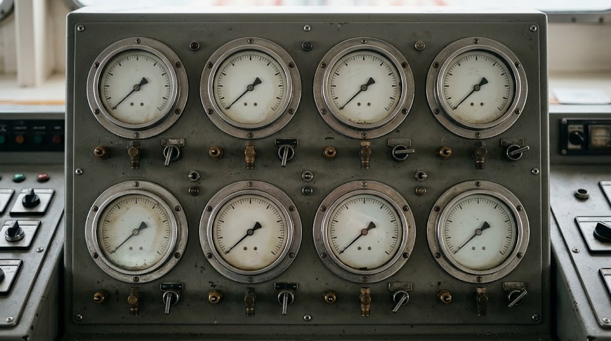
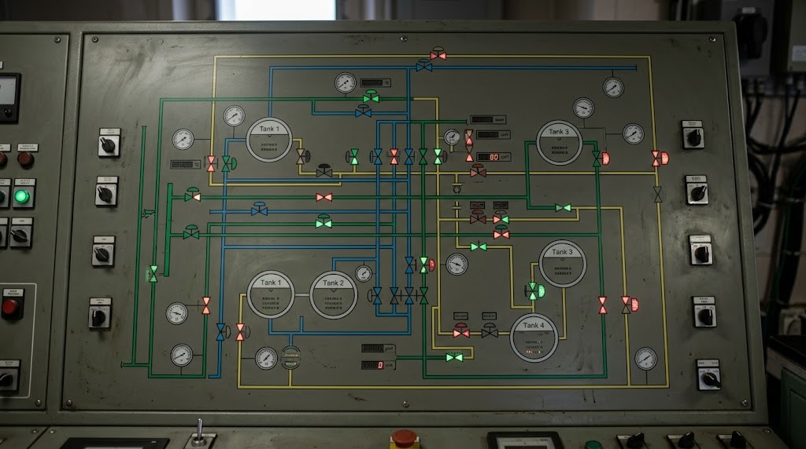
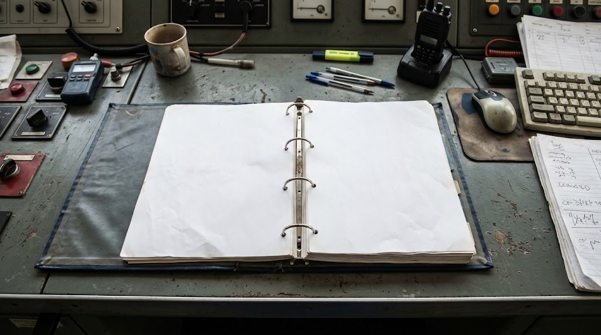

Team · Loading · simulator 15.6.3
Tank 2 pressure is rising during loading. Find the cause and put it right.
Three tabs, one cargo control room. Tap a valve on the Valves screen to operate it.

Next reading (1 min later)


Hand in